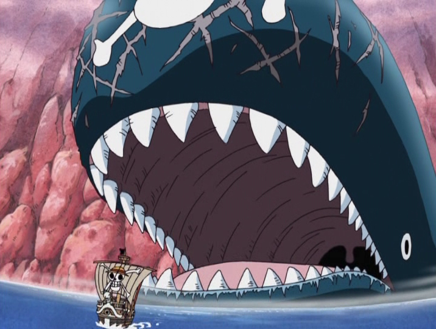
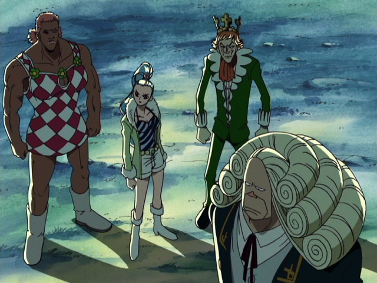
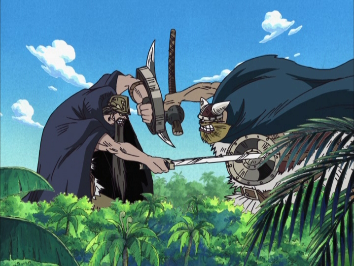
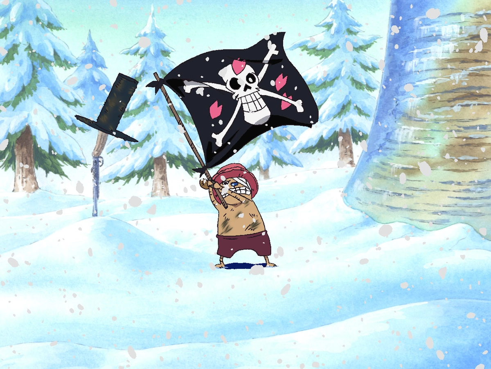
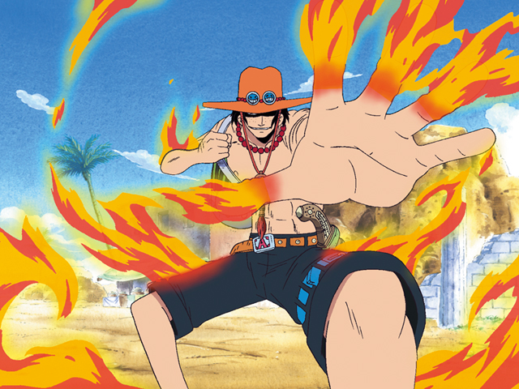
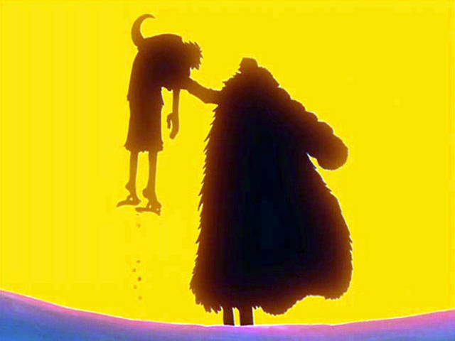
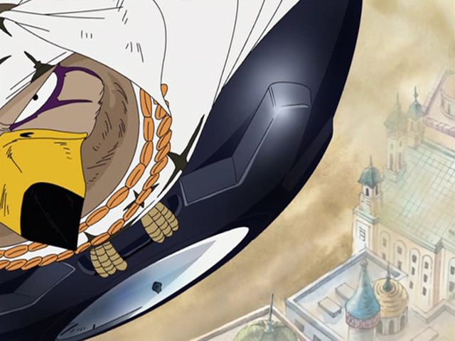
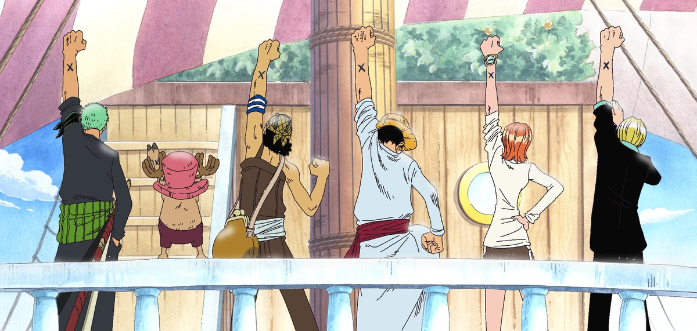

アラバスタ編
約束の岬
 〝偉大なる航路（グランドライン）〟へと突入を果たした麦わらの一味は、突如現れた巨大クジラに船ごと呑み込まれてしまう。そのクジラ・ラブーンは、かつて別れた海賊達の帰りを50年もの間、ずっと待ち続けていた。
灯台守のクロッカスからその事を聞いたルフィは、ラブーンに新たな目的を与える為、〝偉大なる航路〟を周ったのちに再会する事を約束する。ラブーンの体内で出くわした怪しい二人組、Mr.９&ミス・ウェンズデーから「自分達を町まで送り届けてほしい」と頼まれた一行は、クロッカスにもらった磁気を記録する特殊なコンパス、〝記録指針（ログポース）〟を頼りに、彼らが住む町ウイスキーピークを目指す。
歓迎の町
 ウイスキーピークの住人達に盛大な歓迎を受けるルフィ達。だが住人達の正体が秘密犯罪会社「バロックワークス」の社員である事に気づいていたゾロは、ルフィの懸賞金目当てで襲ってきた社員達100人を、たった一人で返り討ちにする。
しかし事はそれでは終わらなかった。バロックワークスのエージェント・Mr.５により、ミス・ウェンズデー、そして同じくエージェントであるMr.８の正体が、アラバスタ王国の王女ビビと護衛隊長イガラムである事が判明。二人は祖国で起きた暴動の裏にバロックワークスの存在を嗅ぎつけ、正体を隠してその目的を潜入調査していた。そして社長で〝王下七武海〟の一人でもあるクロコダイルが、アラバスタ王国の乗っ取りを企んでいると突き止める。だがそれを知ったクロコダイルは、刺客としてMr.５達を送り込んできたのだ。
なりゆきからMr.５達を倒し、ビビを救った麦わらの一味は、彼女を祖国に送り届ける為、アラバスタ王国を目指す事に。そんな彼らの前に現れた、バロックワークスの副社長ミス・オールサンデー。彼女は不敵な笑みを浮かべ、ルフィ達を挑発する。
冒険のリトルガーデン
 〝記録指針〟に導かれ、たどり着いたリトルガーデンでは、巨人族のブロギーとドリーがお互いの誇りを賭け、100年以上も戦いを続けていた。
だがその決闘に思わぬ邪魔が入る。彼らに懸けられた懸賞金を狙い、バロックワークスのMr.３達がドリーの酒に爆薬を仕掛けたのだ。誇りある戦いを踏みにじるこの行為に怒ったルフィは、ウソップ、そしてビビの相棒である超カルガモのカルーと共にMr.３をぶちのめす。
ルフィ達に大いに感謝した巨人達は、島からの脱出を阻んでいた巨大金魚〝島食い〟を倒し、一味の船出を見送った。
チョッパー登場
 巨人達と別れて間もなく、ナミが高熱を出して倒れてしまう。アラバスタ行きをいったん取りやめ、医者探しの旅に出たルフィ達は、〝冬島〟ドラム島へたどり着く。だがこの島の医者は、かつて国が海賊に襲われた際に国王と一緒に国を捨てて逃げ出しており、現在残っているのは〝魔女〟と呼ばれるDr.くれは、ただ一人だった。
ナミを連れ、くれはのもとを訪ねたルフィとサンジは、そこでしゃべるトナカイ・チョッパーと出会う。チョッパーは〝ヒトヒトの実〟の能力者で、友であったDr.ヒルルクの遺志を継ぐため、くれはのもとで医学を学んでいた。チョッパーに興味を持ったルフィは仲間に誘おうとするが、能力者となったせいで周囲から〝バケモノ〟扱いされてきたチョッパーは、その誘いを断る。
とそこへ、国を捨てたかつての王・ワポルが部下と共に帰還。ヒルルクの墓標であるドクロの旗を汚すワポルに怒りを覚えたルフィは、チョッパーと共にワポル達に戦いを挑み、これを打ち倒す。ルフィが見せた海賊の誇りとその熱意に感動したチョッパーは、海賊になる事を決意。くれはに別れを告げ、麦わらの一味の仲間となった。
エース登場
 アラバスタへと急ぐ中、ルフィ達はバロックワークスのMr.２・ボン・クレーと遭遇。ボン・クレーが変身能力を持っていると知った一味は、対抗手段として仲間の証である〝印〟を各々の左腕に記す。
そしてついにアラバスタ王国へと到着。最初に立ち寄ったナノハナの町で一味を待っていたのは、ルフィの兄エースだった。再会の喜びもつかの間、「ある海賊を追っている」というエースは、自分の〝ビブルカード〟をルフィに渡すと、弟の事を一味の仲間に託し、去っていった。
砂の国の冒険
 反乱軍のリーダー・コーザはビビの幼なじみ。彼をよく知る自分であれば、反乱軍を止められる。そう考えたビビは、反乱軍の本拠地ユバへと急ぐ。ビビによると、クロコダイルは〝ダンスパウダー〟と呼ばれる人工的に雨を降らせる粉を使い、国王と国民を対立させ、それに乗じアラバスタを乗っ取ろうと画策しているとの事だった。やっとの思いでユバへとたどり着くが、枯れ果てた町に反乱軍の姿はなく、残っていたのはコーザの父である老人トトただ一人だった…。
ユバの惨状を目にし、打倒クロコダイルの決意を新たにした一行は、目的地をバロックワークスの本拠地レインベースへと変更。アジトのカジノに乗り込んだルフィ達だったが、クロコダイルの罠にかかり、囚われの身に。だが別行動をしていたサンジの機転により、同じく捕らえられていた海軍のスモーカーと共に脱出に成功する。
国王軍と反乱軍の衝突を止める為、首都アルバーナへと急ぐルフィ達の前に、クロコダイルが立ちふさがる。仲間達を先に行かせる為、一人、クロコダイルと対峙するルフィ。だが体を砂と化す〝スナスナの実〟の力の前に手も足も出ず敗北し、瀕死の重傷を負ってしまう。
決戦はアルバーナ
 首都アルバーナへ到着したゾロ達は、ビビをコーザのもとへ送り届ける為、囮役を買って出る。狙いは当たり、バロックワークスのエージェント達を見事おびき出す事に成功する。
一方、ビビは反乱軍の注意を引く為、宮殿の破壊を決意。だがそこにクロコダイルがミス・オ－ルサンデーを連れて現れ、コブラ王に〝古代兵器プルトン〟の在り処を問いただす。クロコダイルの真の狙いが古代兵器にあったと知り、驚くビビ達。だがクロコダイルの口から、さらに驚くべき事実が明らかに。30分後、国王軍と反乱軍が衝突している宮殿広場に強力な砲弾が撃ち込まれるというのだ。砲撃を食い止めようと、必死に立ち向かうビビ。駆け付けたコーザも暴動の裏に隠されていた真実を知り、戦いを止めようとするも凶弾に倒れてしまう。
タイムリミットが迫る中、護衛隊のペルらの力を借り、復活したルフィが宮殿に到着。ナミ達はクロダイルの相手をルフィに任せ、砲撃手探しに奔走する。そしてついに、時計塔に潜んでいた砲撃手を倒す事に成功。砲弾には時限式の起爆装置も仕組まれていたが、ペルの活躍により大惨事は免れた。
ビビの冒険
 その頃、クロコダイル達は、〝歴史の本文（ポーネグリフ）〟が秘蔵された王家の墓にいた。ミス・オールサンデーことニコ・ロビンに〝歴史の本文〟の解読を命じるクロコダイル。だがプルトンの在り処が記されてないと知るや、非情にも彼女を用済みと切り捨てる。そこへ現れたルフィ。度重なる敗北にも屈せず、果敢にクロコダイルに挑み、ついに渾身の〝ゴムゴムの暴風雨（ストーム）〟でクロコダイルを地上へと吹き飛ばす。そして広場に響き渡るビビの魂の叫びが、戦う人々の手を止めさせ、アラバスタの戦いは終結を迎えた。
戦いから数日後、海軍の追跡が始まり、ルフィ達はアラバスタを離れる事を決める。王女として国に残るか、麦わらの一味と冒険に出るか迷うビビだったが、最後は王女として愛する国と共に生きていく道を選ぶ。再び会えたら、また仲間と呼んでほしい。そう涙ながらに問いかけるビビに、ルフィ達は左腕に記された仲間の印をかかげて応えるのだった。